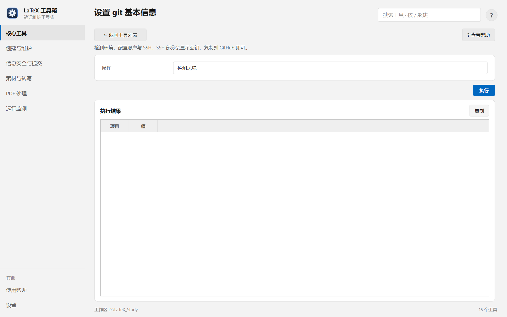

帮助目录 · 核心工具
检测 git / ssh 环境、配置提交身份、配好 GitHub 的 SSH 通道。三件事都只在换机器或首次配置时做一次。
| 面板入口 | 核心工具 → 卡片「设置 git 基本信息」→ 选操作 → 执行 |
|---|---|
| 命令行 | python tools/git_setup/git_setup.py |

操作下拉切换三件事；结果以「项目 / 值」两列表格出来。
user.name / user.email。Permission denied (publickey)。ssh.github.com:443。| 项 | 说明 |
|---|---|
| 操作 | 检测环境 / 配置 Git 账户 / 配置 SSH。切换后下面的字段跟着变。 |
| 用户名 / 邮箱 | 写进 git config --global；留空则保持原值不动。 |
| 没有密钥时生成 ed25519 | 只在 ~/.ssh 里没有密钥时才生成，不会覆盖已有的。 |
| 写 ssh config 的 443 端口 | 把 github.com 指到 ssh.github.com:443，绕开 22 端口被封。 |
| 测试连通性 | 跑一次 ssh -T git@github.com，成功时会显示 Hi 用户名!。 |
python tools/git_setup/git_setup.py --check python tools/git_setup/git_setup.py --account --name 你的名字 --email you@example.com python tools/git_setup/git_setup.py --ssh --gen-key --write-443 --test
| 内容 | 位置 |
|---|---|
| 账户名与邮箱 | ~/.gitconfig（全局） |
| 密钥 | ~/.ssh/id_ed25519 与 .pub |
| SSH 配置 | ~/.ssh/config（只动 Host github.com 那一段） |
| 远程账户名（供建仓库用） | tools/manager/manager.conf 或应用数据目录 |
Q：检测显示「ssh 未安装」怎么办？
A：Windows 10 以上自带 OpenSSH，先在「设置 → 系统 → 可选功能」里确认 OpenSSH 客户端已装；装了仍找不到，说明 PATH 里没有，重装一次该可选功能即可。
Q：push 报 Permission denied (publickey)
A：三种可能：① 公钥没粘到 GitHub；② 粘错了账号；③ ssh-agent 没加载密钥。先点「检测环境」看密钥路径，再用「配置 SSH → 测试连通性」确认。
Q：为什么要把 SSH 改成 443 端口？
A：国内不少网络屏蔽 22 端口，症状是 ssh -T 一直卡住然后超时。443 是 HTTPS 的端口，通常不被拦；GitHub 在 ssh.github.com:443 上提供同一套 SSH 服务。
Q：配置账户会不会覆盖我已经设好的值？
A：留空就不动。填写才写 git config --global。
Q：公司电脑不让改 ~/.ssh，还能用吗？
A：可以改用 HTTPS 远程，但本工具集的建仓库与提交都假设 SSH。这种情况建议单独配一个仓库级 remote。